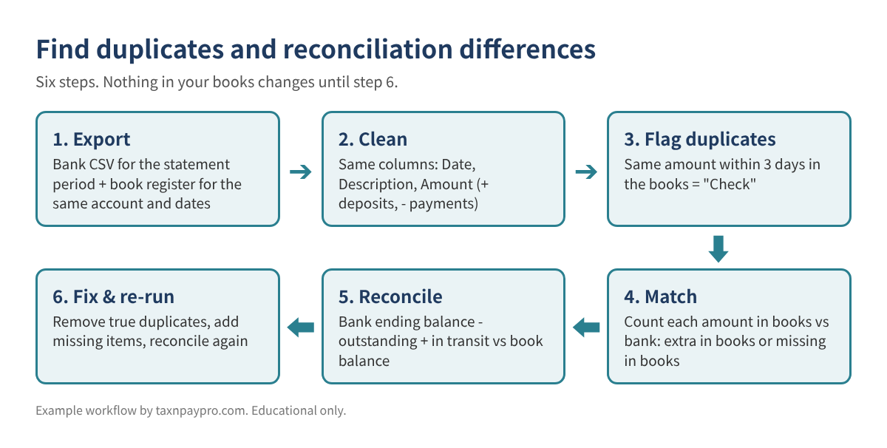
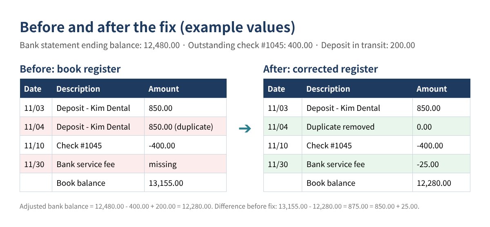
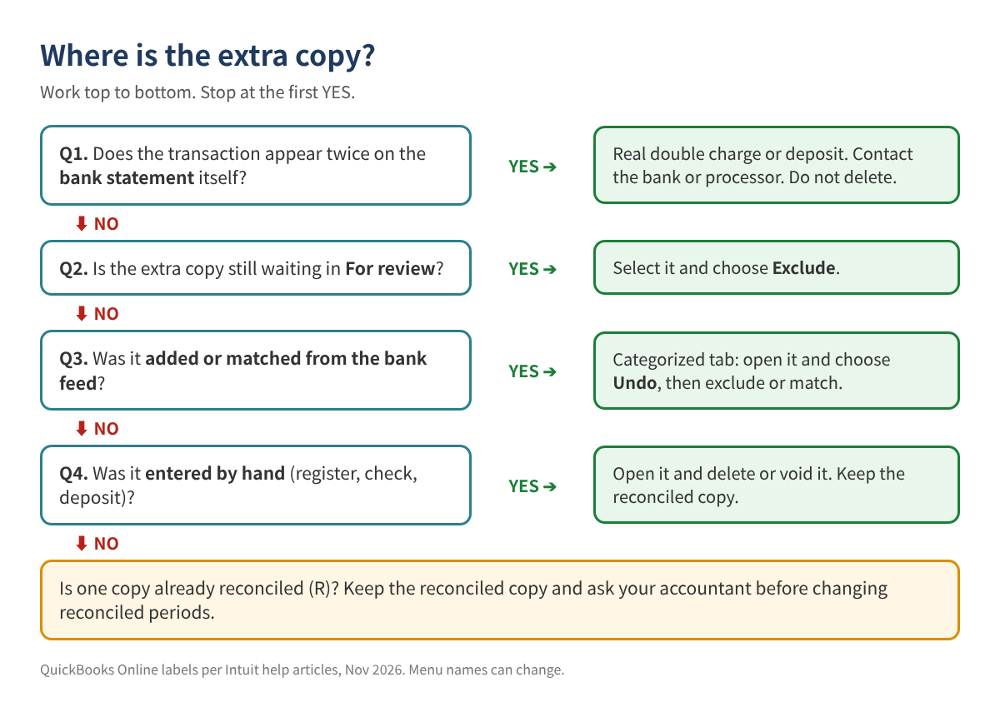

Duplicate Bank Transactions and a Reconciliation That Won't Balance: How to Find Every Difference
↓ Get the free Excel + PDF kit for this article
You open the reconcile screen and the difference is not zero. Or worse, it was zero last month, and now the beginning balance is off. Then you notice the same customer deposit twice, the same fuel charge twice, sometimes months of transactions downloaded again after the bank connection was reset.
This guide shows how to find every duplicate and every reconciling difference with two exports and a spreadsheet, before you touch a single transaction. It works for QuickBooks Online and QuickBooks Desktop, and for any bank.
Who this is for: owners and bookkeepers whose bank or credit card account will not reconcile, or whose bank feed brought in the same transactions again after a reconnect.
Why duplicates and differences happen
Most reconciliation problems come from a short list of causes:
- The bank connection was reset. Intuit's own help article warns that disconnecting and reconnecting "makes QuickBooks download past transactions again."
- A transaction was entered by hand and then added again from the bank feed instead of being matched.
- A customer payment was recorded twice: once as a payment on the invoice and once as a new deposit from the bank feed. Income is now doubled.
- Bank fees, interest or returned items are on the statement but not in the books.
- A reconciled transaction was edited or deleted later, so last month's ending balance no longer equals this month's beginning balance.
- Timing items: checks not yet cashed and deposits not yet credited. These are normal and are not errors.
The goal is to sort every difference into one of these buckets. Once you know the bucket, the fix is simple.

Step 1: Export both sides for the same period
From the bank: download the statement period as CSV (or Excel). Use the exact statement dates, for example 11/01/2026 to 11/30/2026.
From your books: export the register for the same account and dates.
QuickBooks Online
- Go to All apps > Accounting > Chart of accounts.
- Find the bank account and select View register.
- Set the date range to the statement period, then export or print to Excel.
QuickBooks Desktop
- Open Lists > Chart of Accounts, select the bank account, and open the register (or run a QuickReport on it).
- Set the dates to the statement period and choose Excel > Create New Worksheet.
Step 2: Put both lists in the same shape
Paste each list on its own sheet, named Bank and Books. Keep three columns in the same order: Date (A), Description (B), Amount (C). Deposits are positive, payments are negative. If your export has separate Debit and Credit columns, combine them in column C:
=IF(D2<>"", D2, -E2) (D = deposit column, E = payment column)
Make sure dates are real dates, not text. A quick test: =ISNUMBER(A2) should return TRUE. Round amounts with =ROUND(C2,2) so 849.9999 does not hide a match.
Step 3: Flag possible duplicates inside your books
In the Books sheet, add this in column D and fill down:
=IF(COUNTIFS($C:$C,C2,$A:$A,">="&A2-3,$A:$A,"<="&A2+3)>1,"Check","")
It marks any amount that appears more than once within three days. Not every "Check" is a duplicate: rent paid on the 1st every month will not be flagged because the dates are far apart, but two real $50 sales on the same day will be. The next step separates those.
Step 4: Match the books to the bank
Add two columns to the Books sheet:
E: =COUNTIF(Bank!$C:$C, C2) how many times the bank shows this amount F: =COUNTIF($C:$C, C2) how many times your books show it G: =IF(F2>E2,"Extra in books",IF(E2=0,"Not on bank",""))
And one column on the Bank sheet:
D: =IF(COUNTIF(Books!$C:$C, C2)<COUNTIF($C:$C, C2),"Missing in books","")
Now read the results:
| Flag | What it usually means | What to do |
|---|---|---|
| "Check" + "Extra in books" | Likely duplicate in your books | Confirm and remove one copy (Step 6) |
| "Not on bank" | Outstanding check, deposit in transit, or an error | Look at the date: after the statement end = timing item |
| "Missing in books" | Bank fee, interest, or a transaction never entered | Add it to the books |
| "Check" only | Two real transactions with the same amount | Leave it |
Table 1. How to read the flags. These columns are an organizing aid; you still confirm each line.
Step 5: Prove the difference
Reconciliation is just this equation:
Bank ending balance - outstanding checks/payments (in books, not yet on bank) + deposits in transit (in books, not yet on bank) = book balance that SHOULD be
Anything left over must be explained by the "Extra in books" and "Missing in books" lists. Here is a worked example (example values only):
| Line | Amount |
|---|---|
| Bank statement ending balance, 11/30/2026 | 12,480.00 |
| Less outstanding check #1045 | -400.00 |
| Plus deposit in transit (11/30, credited 12/01) | 200.00 |
| Adjusted bank balance | 12,280.00 |
| Book balance before fixes | 13,155.00 |
| Difference to explain | 875.00 |
| Duplicate deposit, Kim Dental, 11/04 (extra in books) | 850.00 |
| Bank service fee, 11/30 (missing in books) | 25.00 |
| Unexplained | 0.00 |
Table 2. Example values only. When "Unexplained" reaches 0.00, you know exactly what to fix.

A shortcut when you are stuck: divide the leftover by 2. If the result matches a transaction, it was probably entered with the wrong sign (a deposit recorded as a payment). If the leftover is divisible by 9, look for two swapped digits (for example 1,520 typed as 1,250).
Step 6: Fix only what you proved
Before changing anything, look at where the extra copy came from. The decision tree below follows Intuit's help article on duplicate bank-feed transactions.

QuickBooks Online
- Still in For review: go to All apps > Accounting > Bank transactions, select the extra copy in the For review tab, then Exclude. Excluded items move to the Excluded tab; if you excluded the wrong one, select it there and choose Undo.
- Already added from the feed: open the Categorized tab, select the link in the Added or Matched column, and choose Undo. The item returns to For review, where you can match it to the right transaction or exclude it.
- Entered by hand: open the register, open the transaction, and delete it (or void it if you want a record). Intuit notes that deleted transactions cannot be restored, though the audit log keeps their details.
- Doubled income from a payment: undo the added deposit and match it to the existing customer payment instead.
- Beginning balance is off: go to All apps > Accounting > Reconcile and pick the account. If you see "Your beginning balance is off by...", select We can help you fix it to open the discrepancy report, which shows reconciled transactions that were changed or deleted.
Undoing a whole reconciliation in QuickBooks Online is done from History by account by the Primary Admin. Intuit warns it is irreversible and deletes the related reconciliation reports and attachments, so download them first and talk with your accountant before you do it.
QuickBooks Desktop
- Open the bank register, find the extra copy, and delete or void it. Keep the copy marked as cleared or reconciled.
- If last month's balance changed, run Reports > Banking > Reconciliation Discrepancy to see which reconciled transactions were edited.
- Use Banking > Reconcile > Locate Discrepancies for the same view from the reconcile window.
When the fixes are in, reconcile again. The difference should be 0.00 and the book balance should equal the adjusted bank balance from Step 5.
Common mistakes
- Deleting a transaction that really happened twice. If it is on the bank statement twice, it is not a bookkeeping duplicate.
- Deleting the reconciled copy and keeping the new one. That breaks last month's reconciliation. Keep the one marked R.
- Forcing the difference with an adjustment entry. It hides the real error, and it usually lands in an expense account that your tax return then picks up.
- Reconnecting the bank again to "refresh" the feed. That can download the same history a second time.
- Comparing different date ranges. The bank export and the book export must cover the same days.
- Treating timing items as errors. A check written on 11/29 and cashed on 12/02 belongs on the outstanding list, not in the trash.
FAQ
How far back should I check?
Start with the last month that reconciled to 0.00 with a correct beginning balance. Everything after that is in scope.
The bank feed downloaded 12 months again. Do I exclude them one by one?
In For review you can select many items at once and exclude them together. Check first that each one already exists in your books (Step 4), so you do not exclude something that was never entered.
Is a difference of a few dollars worth chasing?
Yes. A small difference is often two bigger errors that partly cancel out, such as a missing $425 fee and an extra $400 deposit.
Can I fix last year after taxes were filed?
Talk to your tax preparer first. Changes to a filed year can change reported income. Many accountants prefer a correcting entry in the current year.
Checklist
- ☐ Bank CSV and book register exported for the same account and dates
- ☐ Both sheets in Date / Description / Amount format, dates are real dates
- ☐ Duplicate flags reviewed line by line
- ☐ "Extra in books" and "Missing in books" lists built
- ☐ Difference fully explained (Unexplained = 0.00)
- ☐ Duplicates removed at the source, missing items added, reconciled copies kept
- ☐ Account reconciled again to 0.00; reports saved
Prefer a ready-made workbook?
You can download the ready-made Duplicate Transaction & Bank Reconciliation Difference Finder for free in the Free kit download box below: the Excel workbook plus a PDF guide, no sign-up needed.
This article is educational only and is not tax, legal or accounting advice; results depend on your records and no particular outcome is guaranteed. Example values are made up. Menu names can change. QuickBooks is a registered trademark of Intuit Inc.; not affiliated with or endorsed by Intuit.
Sources (checked November 2026): Intuit, "Fix duplicate transactions in QuickBooks Online bank feeds": https://quickbooks.intuit.com/learn-support/en-us/help-article/duplicate-transactions/fix-duplicate-transactions-quickbooks-online-bank-feeds/L1fjxl88f_US_en_US · Intuit, "Exclude duplicate transactions in QuickBooks Online": https://quickbooks.intuit.com/learn-support/en-us/help-article/bank-transactions/exclude-duplicate-transactions-quickbooks-online/L8jyr7WpC_US_en_US · Intuit, "Fix beginning balance issues when reconciling in QuickBooks Online": https://quickbooks.intuit.com/learn-support/en-us/help-article/statement-reconciliation/fix-issues-accounts-reconciled-past-quickbooks/L8lx6PQQ5_US_en_US · Intuit, "Undo or remove transactions from reconciliations in QuickBooks Online": https://quickbooks.intuit.com/learn-support/en-us/help-article/accounting-bookkeeping/undo-remove-transactions-reconciliations-online/L6ERlEXxn_US_en_US
Free kit download
Tools to follow this article step by step. No sign-up needed.
- Blank Excel workbookQB_Duplicate_Recon_Finder_BLANK.xlsx · 220 KB
- Excel workbook with sample dataQB_Duplicate_Recon_Finder_SAMPLE.xlsx · 187 KB
- Step-by-step guide (PDF)Guide_EN_Duplicate_Recon_Finder.pdf · 52 KB
Free to use for yourself and your own business; please do not resell or redistribute. General information, not tax, legal or accounting advice; check every figure against your own records. QuickBooks is a trademark of Intuit Inc.; BIZLEX is not affiliated with Intuit.